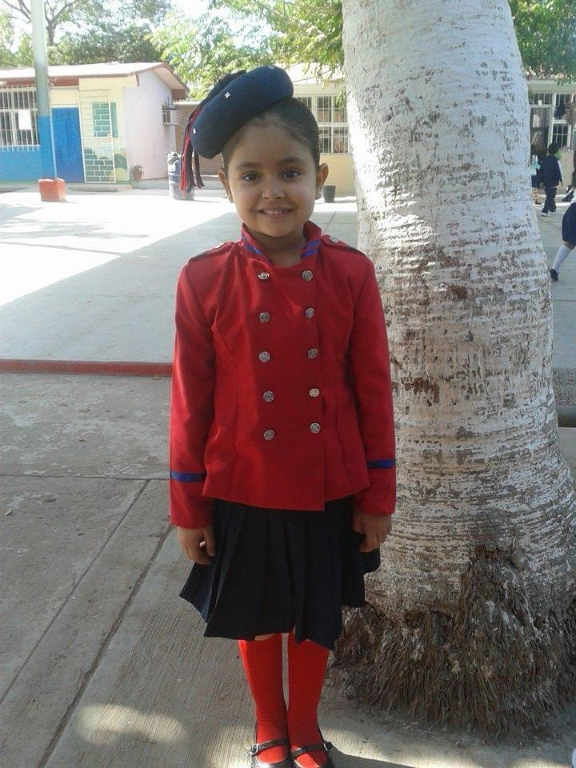
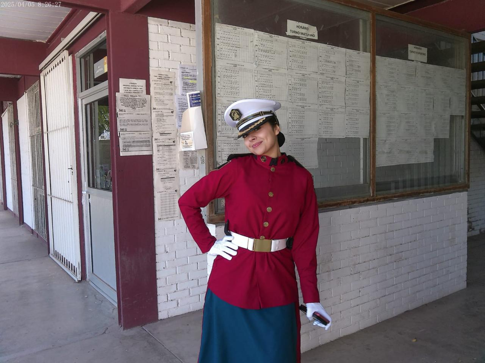

Mi nombre es Lizeth Marahí Varela Carrilo, soy de Los Mochis, Sinaloa,
nací un 26 de febrero de 2008, ya tengo 17 años y he vivido diferente cosas,
tengo una vida muy buena y una gran familia, actualmente, estudio la preparatoria
en el CETis 68, mi mamá me inscribio ahí, me va bien y la escuela
es buena, conocí a muchas personas buenas y he logrado muchas cosas.
Desde el kinder descubrí que me gusta la escolta de bandera,
he estado en ella durante el ultimo año de kinder,
el ultimo año de primaria y secundaria y actualmente llevo casi 3 años en la
escolta de bandera de la preparatoria.


Si te preguntas, ¿qué es una escolta de bandera? aquí te dejo la definicion de lo que es Da clíc aquí
Recuerdo que cuando tenia 8 años aprendí a andar en bicicleta,
ese día fue muy divertido y doloroso, tuve muchas caídas pero finalmente aprendí.
Siempre me han gustado demasiadas cosas y al ir creciendo, conociendo y probando cosas nuevas mis gustos han cambiando, ya sea en comidas, musica, estilos, ropa y entre otras cosas más, algunas de las cosas que me gustan en comida son:
Entre cosas que me gustan hacer, estan las siguientes cosas:
Algunos de mis dulces favoritos son:
| DULCES |
|---|
| Chocolates |
| Paletas de chamoy |
| Picafresas |
| Galletas |
| Pastel de chocolate |